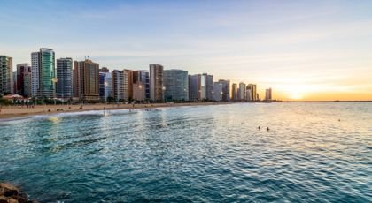

Destinos
-
Porto Seguro

Uma das cidades mais animadas do Brasil. Pegue uma escuna nas margens do Rio Buranhém e explore o oceano no Parque Marinho de Recife de Fora, a 24 km de distância. Para chegar à Cidade Histórica, suba uma escadaria. Lá em cima, você encontra apresentações de capoeira e consegue ver a cidade toda. A Passarela do Álcool, um calçadão repleto de barraquinhas de artesanato, restaurantes e artistas, convida você a fazer parte da tradição cultural brasileira.
-
Fortaleza
As praias são a principal atração desta cidade ensolarada, em rápido desenvolvimento, particularmente boêmia: a linda Iracema, a bela Meireles, ideal para famílias, Mucuripe, base de pesca e passeios de barco e a tranquila Praia do Futuro. As barracas no Mercado Central ou na Feirinha Beira Mar transbordam com o artesanato local, de cerâmica a artigos em crochê e couro. A Fortaleza de Nossa Senhora da Assunção, construída pelos holandeses no centro da cidade em 1649, marca o ponto de origem de Fortaleza.
-
Natal

Portal para as deslumbrantes praias do Rio Grande do Norte, a cidade de Natal fica no alto da costa atlântica do Brasil, na foz do Rio Potengi. Fuja do agito nas praias escondidas de Pipa e Pirangi ou corra para o agito de Genipabu e Tibau do Sul. A cidade é cercada pelo Parque Estadual das Dunas. Você pode rodar com um buggy por dunas de areia de mais de 10 metros ou passear de dromedário. A cidade tem o ar mais puro do continente, de acordo com a NASA, e abriga ainda o maior cajueiro do mundo.
-
Rio de Janeiro

Uma metrópole urbana movida pela cadência do samba. Com inúmeras praias, belíssimas montanhas e o samba e a bossa nova ao fundo, é fácil se apaixonar pelo Rio de Janeiro. Imortalizada em uma canção, a praia de Ipanema continua sendo o lugar perfeito para caminhar, pegar um bronzeado e se exibir. A maior estátua Art déco do mundo, o Cristo Redentor, convida todos a uma visita ao Corcovado. E todos os anos, durante o Carnaval, o Rio oferece uma extravagante celebração com muita festa, música, dança e fantasias
-
Florianópolis
Nomeada pela revista brasileira semanal Veja “o melhor lugar para se viver no Brasil”, por isso nada mais natural do que os turistas quererem conhecê-la também. E eles vão mesmo. Florianópolis é um destino cada vez mais procurado devido às suas praias perfeitas, o excelente surfe, os frutos do mar deliciosos e a combinação de uma cidade grande moderna com fortificações coloniais do século XVI com mercados e parques tranquilos.
-
Curitiba
O Jardim Botânico de Curitiba em estilo francês é uma das atrações mais populares desta cidade brasileira, com flores, lagos, caminhos e estufa art nouveau, que criam uma atmosfera de sonhos de doce fragrância. Continue a conhecer as paisagens adoráveis de Curitiba no Parque Estadual de Vila Velha e no Parque Tanguá. Visite o Museu Oscar Niemeyer, uma celebração da audácia e dos trabalhos abstratos do arquiteto, e depois assista a algum espetáculo na Ópera de Arame, criada para parecer feita de arame.